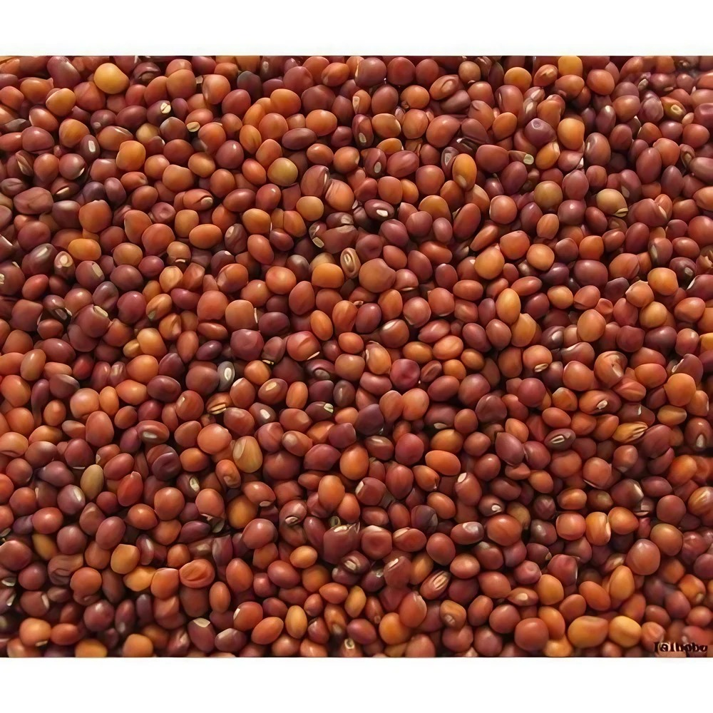

Redgram (Pigeon Pea) Cultivation Guide

1. Land Preparation
Well-drained loamy soils are ideal.
Plow 2–3 times to achieve fine tilth and remove weeds.
Soil pH should be between 6.0 and 7.5.
2. Seed Selection & Sowing
Use certified high-yielding and wilt-resistant varieties.
Seed rate: 8–10 kg/acre.
Spacing: 60 x 30 cm for sole cropping; 120 x 30 cm in intercropping systems.
Soak seeds in fungicide (Carbendazim) before sowing.
3. Water Management
Redgram is drought-tolerant but needs 2–3 irrigations during flowering and pod filling stages.
Avoid water stagnation, especially in heavy soils.
4. Fertilization Schedule
Apply FYM (5–10 tons) during land prep.
Basal Dose: DAP (100 kg/acre) or Urea (20 kg) + SSP (100 kg).
No top dressing usually required if inoculated with Rhizobium.
5. Weed & Pest Management
Manual weeding at 20–25 and 40–45 days after sowing.
Pests: Pod borer — use Neem-based sprays or chemical insecticides if needed.
Diseases: Wilt and Sterility Mosaic Virus — use resistant varieties and seed treatment.
6. Investment Breakdown (Per Acre)
Input
Estimated Cost (INR)
Seeds
₹800 – ₹1,200
Fertilizers
₹1,200 – ₹1,800
Pesticides
₹800 – ₹1,000
Labor
₹4,000 – ₹6,000
Irrigation
₹1,000 – ₹1,500
Total Investment
₹7,800 – ₹11,500 per acre
7. Harvesting & Yield
Harvest when pods turn brown and dry.
Yield: 5–8 quintals/acre under good management.
8. Market Rate & Profit Estimation
Average market price: ₹6,000 – ₹8,000/quintal.
Gross return: ₹30,000 – ₹64,000 per acre.
Net profit: ₹18,000 – ₹52,000 per acre.